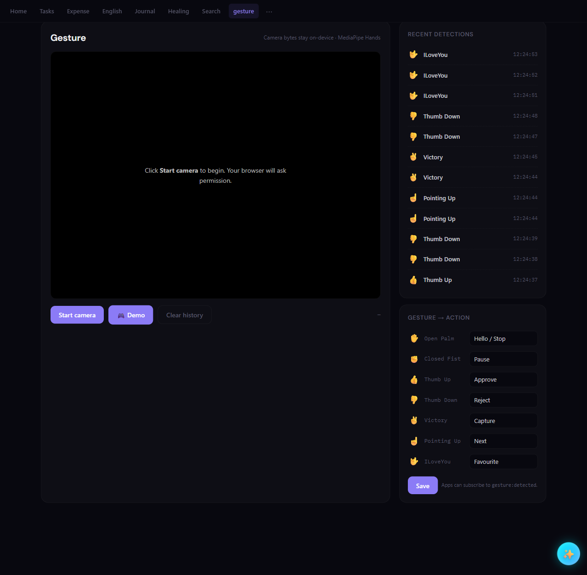

The Harness and the Model: Why the 'Vibe' Defines the 'Code'
I spent a night running a simple experiment. I gave the exact same prompt to the same model—Claude 4.7 Opus—at the exact same time.
"Make a gesture control demo app based on the camera input, log the development effort for this app so we can assess the ability of our coding tool."
The only thing that changed was the environment.
The Two Versions of the "Same" AI¶
On one side, I had Method A: a raw coding tool in a fresh, empty directory. On the other, Method B: a session running inside EmptyOS. This is my own project space where I’ve set specific "house rules," a memory store, and a clear definition of what "done" looks like.
I expected the code to look a bit different, but I didn't expect the AI performance to fundamentally change. After all, it was the same brain underneath.
| Feature | Method A (The Raw Tool) | Method B (EmptyOS) |
|---|---|---|
| Output | 1 file (index.html), 454 lines. |
4 files, 582 lines (Manifest, Backend, UI, Tests). |
| Philosophy | A cool, isolated "hack." | A structured "system component." |
| Integration | None (Siloed). | Wired to a system-wide event bus. |
| Verification | "Human needs to check it." | 10 passing tests (Automated). |
| Cost/Effort | ~2.5 mins, 6 tool calls. | ~13 mins, 65 tool calls. |
The Finding: The "Vibe" is Load-Bearing¶
In an empty directory, the model correctly assumed the vibe was "quick and dirty." Inside EmptyOS, it correctly assumed the vibe was "system membership."
This is the part people miss when they talk about AI models being "good" or "bad." The model provides the raw reasoning—the engine—but the Harness (the rules, the memory, the tests) is what defines the output's ambition.
When the model is inside a structured environment, it doesn't just write code; it follows a standard and wires itself into the ecosystem. It spends its tokens on things that don't "show up" in a demo but matter in production:
-
Standardized event names for cross-app communication.
-
Self-correction via automated test loops.
-
Updating release manifests and documentation.
-
Ensuring the new code "plays nice" with existing background daemons.
The Verification Gap¶
The most telling moment was the bug. During the EmptyOS session, the model tried to use a helper function called EOS.get(). In this specific project, that function didn't exist.
Because the harness forces the model to run a test suite before it finishes, the AI caught its own mistake, realized the function was missing, and fixed the logic. In the "Raw" setup, that bug would have just lived there until a human tried to run it and saw the console error.
The harness pays for itself by reducing the "human tax" of checking the AI’s work.
My Takeaway¶
If you swap out a model (moving from 4.7 to a future 4.8, for example) but keep a messy environment, you just get a faster version of messy code.
The "vibe" of your project directory—your .rules, your test harnesses, your directory structure—isn't just organizational fluff. It is the infrastructure that tells the AI how much effort to put in.
If you want the AI to act like a Senior Engineer, you have to give it an environment that demands it. Strip the context, and you strip the ambition, no matter how "smart" the model is.
Try the gesture recognition yourself¶
Both apps are running live in your browser below — camera stays entirely on your device, nothing is uploaded.
▶ Method A — Raw demo · ▶ Method B — EmptyOS demo
A note on what you're seeing: the real difference between the two methods is structural — the manifest, the 10 automated tests, the event bus wiring. None of that is visible in a browser demo. To make Method B hostable as a static page here, I removed the server integration that is the whole point of the EmptyOS version. What you're comparing is the output UX, not the architecture. The real story is in the table above.
This is what the actual EmptyOS version looks like when running — the part the static demo can't show:

Every detection is persisted to a server log (right panel), and the action labels (Approve, Reject, Capture…) are broadcast as gesture:detected events that any other app in the system can subscribe to. Method A has none of this — and it never would, because the environment never asked for it.
Listen to this post¶
⬇ Download as video — share on LinkedIn, X, etc.
AI-generated podcast discussion of this article
Built with EmptyOS — an open-source mind companion that thinks and creates with you, not for you. Try the live demo (sample vault, sign-in token included) · Source on GitHub.